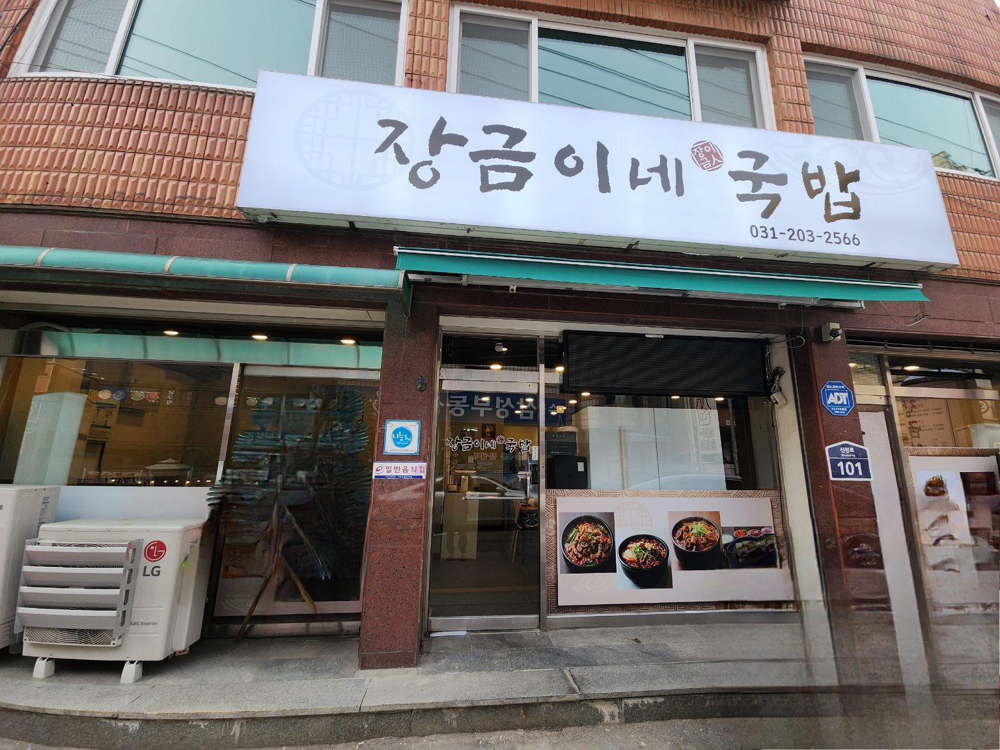
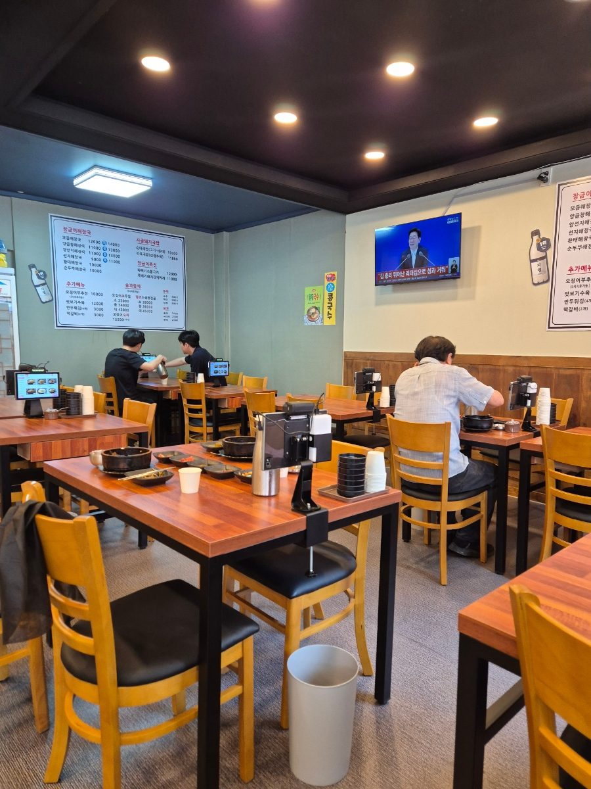
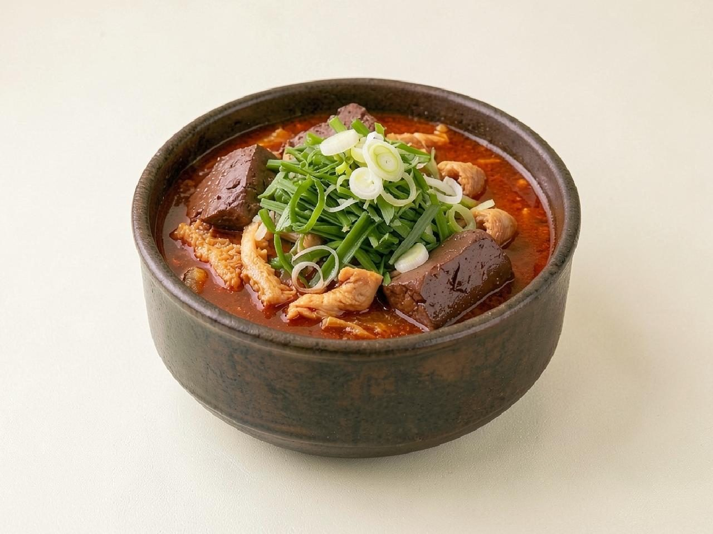

AI ordering and reservations for small Korean restaurants, built only with Claude.
Janggeumine AI answers customers, takes takeout and table orders, and manages bookings in natural Korean and English, so a small kitchen team can stop running to the phone at the lunch rush. Every part of it, from the conversations to the code, is built on Claude.
How we use Claude Our pilot restaurantThe problem
Small restaurants in Korea run on phone calls. At peak hours the same few people cook, serve, and answer the phone, and every missed call is a lost order or a no-show. Rule-based ordering bots break the moment a customer asks something off-script.
Missed calls at peak
Lunch and dinner rushes are exactly when the phone rings most and nobody can pick up.
Messy, real requests
"Two spicy, one not spicy, no green onion, pick up at 12:20" is normal. Keyword bots cannot handle it.
No budget for an IT team
A neighborhood restaurant needs something that just works, not a project.
The product
Two Claude agents that sit between the customer and the kitchen.
1. Ordering agent
- Takes takeout and table orders in plain Korean or English
- Answers menu, spice level and allergen questions from the restaurant's own menu data
- Confirms the order back to the customer and sends a clean ticket to the kitchen
2. Reservation agent
- Books tables and group reservations against the real seating calendar
- Sends confirmations and reminders, handles changes and cancellations
- Hands off to a human whenever it is unsure
Built entirely on Claude
We use one model family for everything. No other LLM provider is in the product or in our workflow.
Claude understands each customer message, handles multi-item, multi-step and ambiguous requests, and replies in the customer's language (Korean or English).
Claude calls our own tools to look up the menu, check seat availability, create orders and reservations. The restaurant's data stays the source of truth; Claude never invents a menu item or a free table.
We plan to route simple, high-volume intents (opening hours, "is there a table now?") to Claude Haiku for speed and cost, and complex orders and edge cases to Claude Sonnet.
The menu, policies and system prompt are the same for every conversation, so we design around Claude prompt caching to keep latency and cost low enough for a single restaurant.
Allergen answers come only from the restaurant's ingredient data, and the agent hands off to staff when it is not certain.
We build the product with Claude Code, and use Claude for planning, writing and testing. Claude is our only AI tool.
Roadmap
We are a small, self-funded team. We start with our own restaurant, where we feel the problem every day.
- Dec 2024Janggeumine Gukbap opens in Suwon, Korea.
- Oct 2026nowBuilding the ordering and reservation agents on the Claude API.
- NextPilot inside our own restaurant with real customers; measure answered calls, order accuracy and no-shows.
- After the pilotOffer the same Claude-powered assistant to other small restaurants in Korea.
Pilot restaurant: Janggeumine Gukbap
장금이네국밥, a gukbap restaurant in Yeongtong, Suwon, open since December 2024 (10:00–15:00, 17:00–21:00). This is where Janggeumine AI is designed and will first be used.



Company
Janggeumine Gukbap (장금이네국밥), founded December 2024, Suwon, South Korea. Founder & owner: Sunmi Na.
Contact: waterhan0493@yunnakji.com